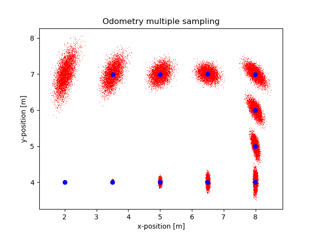
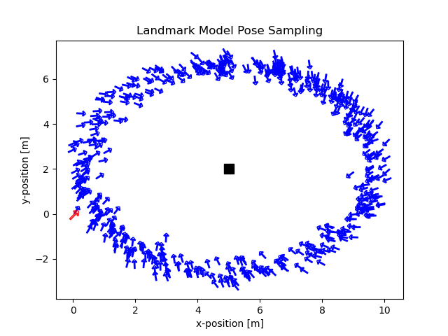

PROBABILISTIC ROBOTICS / PYTHON EXAMPLES
Explore how robots move, sense, and estimate.
Practical, educational Python examples of algorithms from Probabilistic Robotics. The repository simulates robot motion, measurements, localization, mapping, and SLAM. These pages bring selected examples into the browser.


INTERACTIVE PAGES
Choose a model
The Motion Model and Sensor Model labs are available now. Gaussian and discrete filter pages are prepared for upcoming examples.
Motion Model
Run the velocity motion model, adjust noise and commands, and inspect sampled trajectories and positions.
Open lab → 03AvailableSensor Model
Explore landmark range and bearing measurements, pose sampling, laser-ray probabilities, and likelihood fields.
Open lab → 04AvailableGaussian Filters (EKF)
Run landmark-based EKF localization, inspect covariance ellipses, and compare EKF and odometry errors.
Open lab → 05AvailableDiscrete Filters (Particle Filter)
Compare landmark and laser particle filters with animated trajectories, particle uncertainty, and position errors.
Open lab →FROM THE MAIN REPOSITORY
What the examples cover
Motion Models
Odometry and velocity motion models.
Sensor Models
Beam range and landmark models, likelihood fields, ray casting, and data generation.
Gaussian Filters
EKF and UKF implementations, localization examples, and a Jacobian notebook.
Discrete Filters
Particle filters and localization examples.
Mapping and SLAM
Grid and occupancy mapping, MAP mapping, and EKF SLAM simulations.
WORK WITH THE SOURCE
Run the examples locally
The main branch contains the full Python scripts. On Ubuntu, clone the repository, create a Python virtual environment, install the package, and run an example module from the repository root.
git clone --branch main https://github.com/maurom3197/probabilistic-robotics-python-examples.git
cd probabilistic-robotics-python-examples
python3 -m venv prob-robotics-python
source prob-robotics-python/bin/activate
pip install -e .
python -m Motion_Models.velocity_motion_modelREFERENCE & ACKNOWLEDGEMENTS
Based on the textbook
Thrun, S., Burgard, W., and Fox, D. Probabilistic Robotics. MIT Press, 2005.
This work supports teaching by researchers at the PIC4SeR Centre for Service Robotics at Politecnico di Torino, for the M.Sc. course on sensors, embedded systems, and algorithms for service robotics.
The repository is licensed under GPL-3.0 ↗.